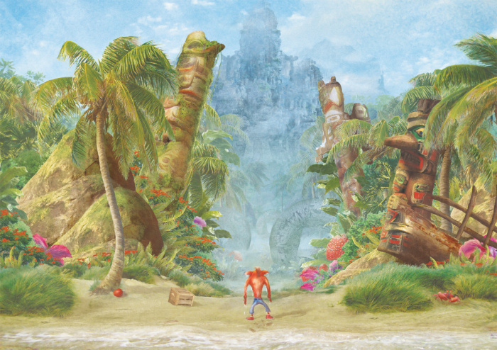

About N. Sanity Island
Later games would introduce new elements to the island, such as a series of caves with wooden structures inside, possibly created by the natives to gather resources from the inside of the mountain, first seen in Crash Twinsanity in the level Cavern Catastrophe. The island can also be seen partially covered in snow during the events of Crash Bandicoot 2: Cortex Strikes Back, a condition that drastically changed the look of certain parts of the island.
Other than the natives, the island is home to Crash and Coco Bandicoot, the witch doctor Aku Aku, their pets Polar, Pura, and Baby T, and their adopted brother Crunch Bandicoot. One of the most famous and recognizable locations on the island is N. Sanity Beach, a sandy area usually depicted with a big wooden boat shipwrecked on the side and a small narrow path that leads into the mysterious jungles of the island. In Crash Twinsanity this depiction of the beach is dropped in favor of a more open area that extends from Crash's house to the Skull Rock waterfall.
The depiction of the island in Crash Twinsanity is overall quite different from the previous games. The island appears to be smaller in size, with the waterfall located inside the native's territory and far away from N. Sanity Beach, now located right next to the beach. Also, the river is not present anymore and the waterfall leads directly into the ocean. Papu's village was relocated to a high up cliff near the ocean, and the natives' territory is much smaller in scope. A river traverses the island, but it doesn't seem to be related to the waterfall any more. N. Sanity Beach itself has been changed quite a lot, now lacking distinctive characteristics like the big boat shipwrecked on the rocks and looking more like a generic beach area with tropical trees and grass around it. A small hen-house is located here. Farmer Ernest also owns a farm farther into the island.